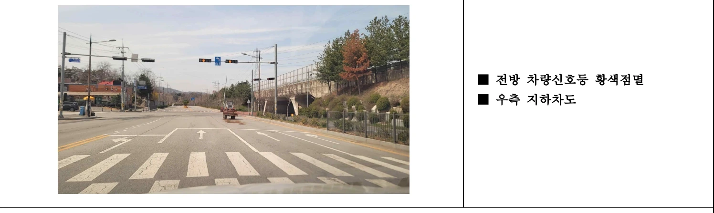

699. Which of the following are the safest ways to drive in the given situation? (Select TWO)

- ①When intending to turn right, turn right directly from the straight lane as the road is not busy.
- ②Keep honking and speed up to pass through the intersection as an agricultural machine is driving ahead.
- ③Slow down to enter the intersection as it is difficult to see vehicles entering from the underpass on the right side.
- ④You can park on the right side of the road as the road has light traffic.
- ⑤If there are pedestrians crossing the street, stop temporarily to ensure their safety before proceeding.
Show answer
Answer
③ Slow down to enter the intersection as it is difficult to see vehicles entering from the underpass on the right side.
⑤ If there are pedestrians crossing the street, stop temporarily to ensure their safety before proceeding.
Reference
When the yellow light flashes, you can proceed while paying attention to other traffic or safety signs. When agricultural machinery is driven on the road, the speed is slow, so proceed with safety in mind. If there is poor visibility of the underpass on the right, be careful when entering the intersection.
Reference text is a machine translation for study.